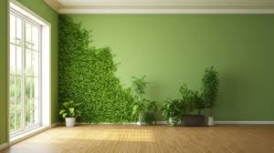

¿Qué son los muros verdes?
los muros verdes están ganando mucha importancia gracias a su valor
estético y al impacto positivo que ejercen las plantas sobre el medio ambiente.
El verde de las plantas tiene un gran efecto en el ánimo de las personas, además
de ser bueno para la naturaleza.
3. Otros